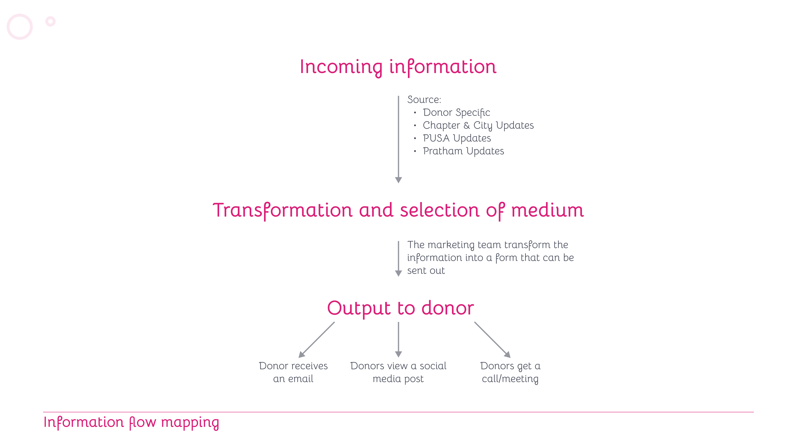
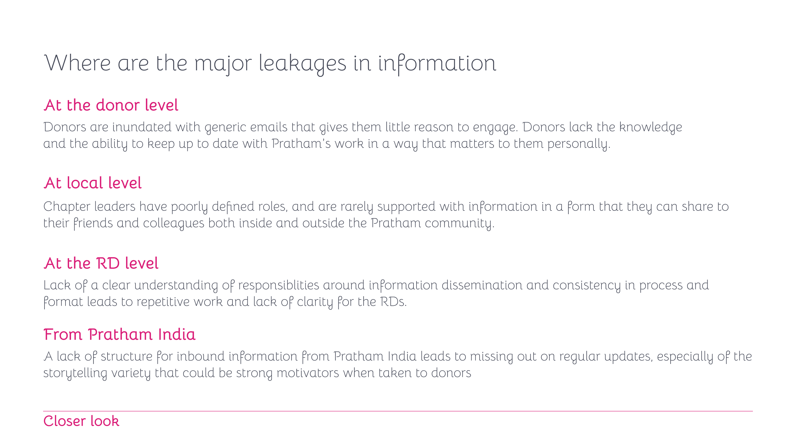
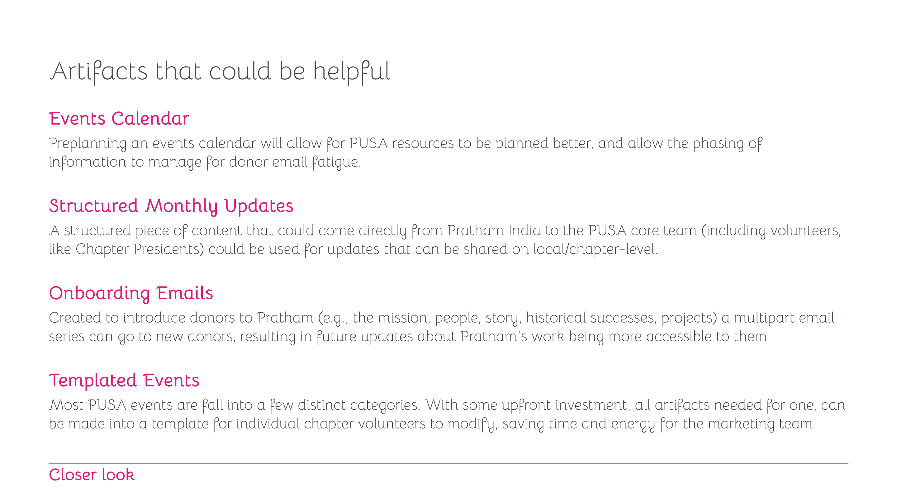

Pratham has extraordinary stories. The problem isn't the stories; it's the pipe. The strange part: most of what the donor model revealed was already known to Pratham's leadership — yet the journey was still broken. Through the conversations and donor surveys we uncovered large disparities in how similar situations were handled across the organisation. So we traced how information travels from Pratham India and the chapters, through the marketing team, out to the donor — and found where it leaks, and how to seal it.
Each source has its own owner, rhythm and tone — and they rarely move in concert.
Local events and chapter-level fundraising. Most donor updates live here.
Receipts, and updates from the specific programs a donor chose to support — like a Digital Learning Village.
Org-level updates, usually about fundraising goals, from the PUSA core.
Program updates and the real student & community narratives — the gold, when it makes the trip.
By creating a visual mapping of the flow of information — and the transformation events along it — we could point at exactly where the discrepancies were breaking the donor journey. The shape is simple: the four sources come in, the marketing team transforms them into something sendable, and the donor receives one of three things — an email, a social media post, or a call/meeting.
Two leaks sat right on the map. First, information that reached donors was often filtered by chapter leaders, leading to many variations across chapters — two identical donors in two cities were living in different Prathams. Second, the initial understanding failed to account for the dramatic retention differences between sources — calls or visits being far more memorable than anything that lands in an inbox. Yet the inbox carried the volume.


Traced level by level, the leaks land in four places:
No clear ownership of who shares what → repetitive work and confusion.
Inundated with generic emails that give little reason to engage.
Chapter leaders have fuzzy roles and no shareable material.
No structure for inbound stories → the strongest motivators never arrive.

Content straight from Pratham India to the PUSA core (and chapter presidents) to share locally.
Pre-planned, so resources are phased and donors aren't fatigued by email.
A multi-part welcome series introducing new donors to the mission, people and story.
Most events fit a few types — templatise the artifacts so chapter volunteers move fast.
And beyond the plumbing, ways to let donors carry the story themselves:
Because the goal was never more emails. It was making people feel like they belong to something.
Fix the pipe, and the research has somewhere to land.